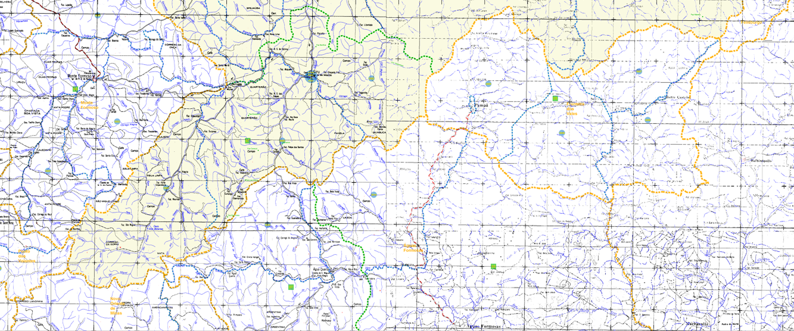
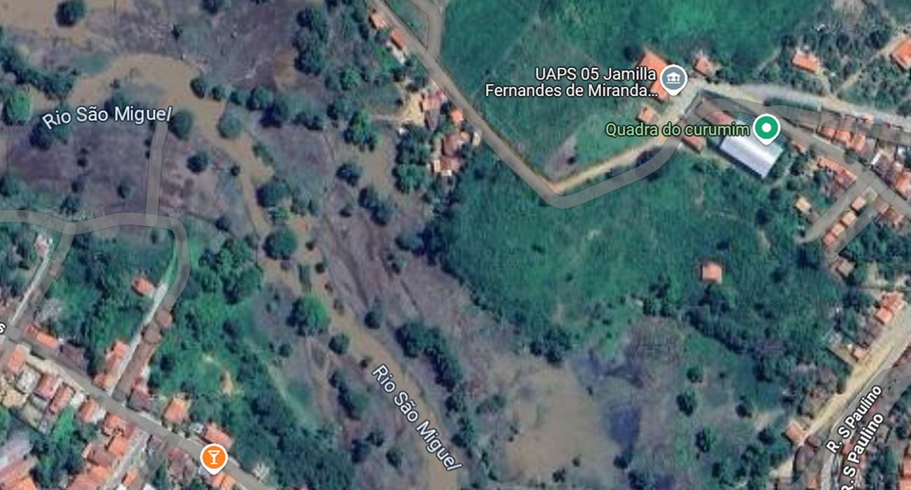
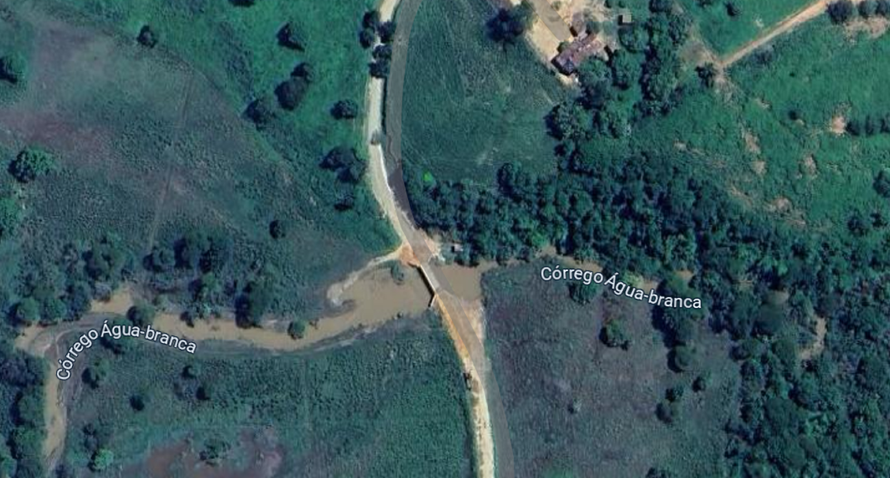
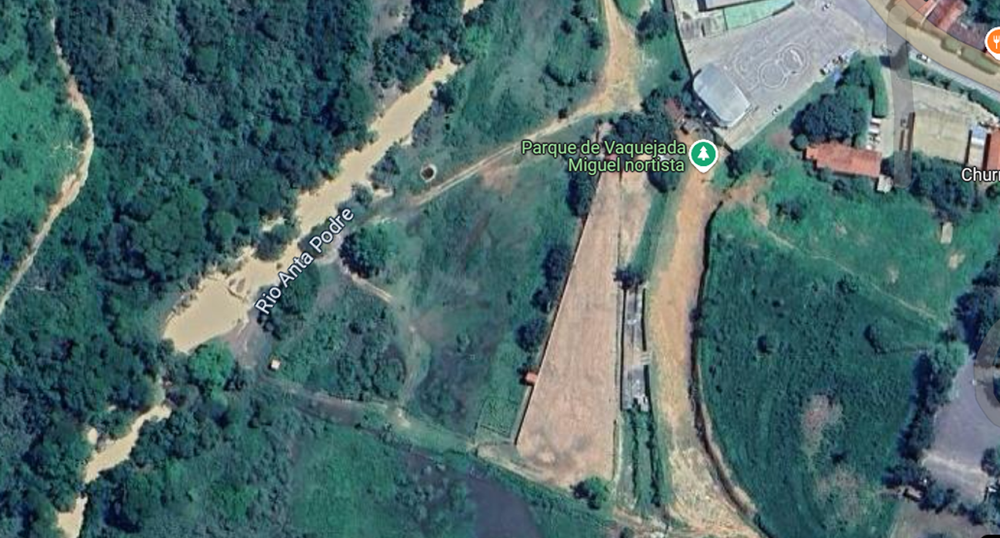
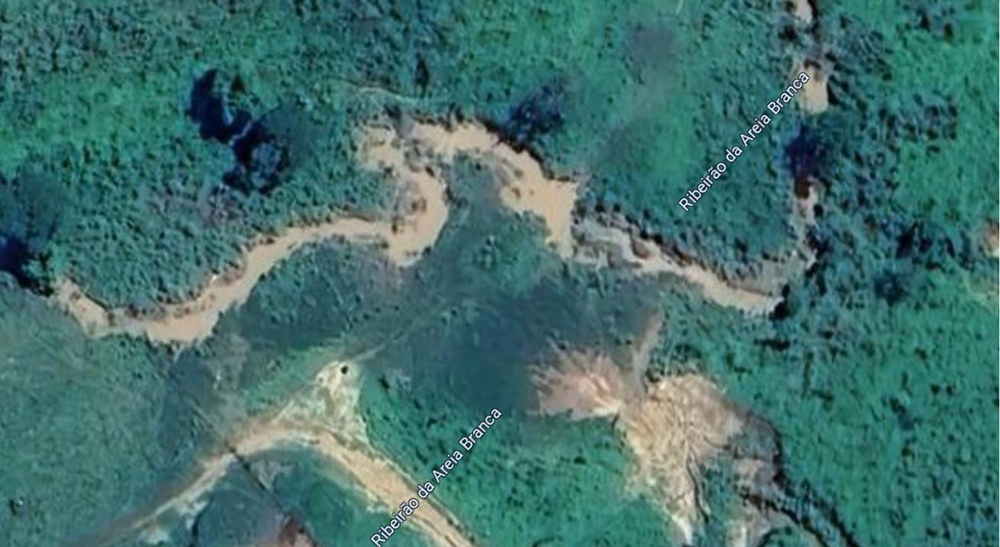

O município de Joaíma integra a bacia hidrográfica do rio Jequitinhonha, uma das mais importantes da região. Sua geografia é marcada por uma rede diversificada de rios, riachos e córregos que não apenas moldam a paisagem local, mas também desempenham um papel essencial no abastecimento de água, na agricultura, na biodiversidade e na história da cidade.
Descrição: É o principal rio que banha Joaíma, sendo um dos maiores afluentes do rio Jequitinhonha.
Importância: Além de sua relevância ecológica, o Rio São Miguel foi fundamental para o desenvolvimento urbano da cidade, influenciando a localização do núcleo habitacional.
Curiosidade: A cidade está situada à margem esquerda deste rio, o que contribuiu para sua expansão e estruturação urbana.
Descrição: Este córrego é significativo na história de Joaíma, pois deu origem ao antigo povoado conhecido como "Quartel de Água Branca".
Importância: Foi às suas margens que se estabeleceu um quartel da 7ª Divisão Militar de São Miguel, marcando o início da ocupação organizada da região.
Curiosidade: O nome atual da cidade, Joaíma, é uma homenagem ao cacique indígena Joahima, mas sua origem está diretamente ligada ao Córrego Água Branca.
Descrição: Este ribeirão é um dos cursos d'água que atravessam o município, contribuindo para a bacia hidrográfica local.
Importância: Desempenha um papel na drenagem e no abastecimento hídrico da região, sendo essencial para a agricultura e outras atividades econômicas.
Curiosidade: A presença de ribeirões como o Anta Podre Grande é comum na região, refletindo a diversidade hídrica do município.
Descrição: Localizado em áreas de declive acentuado, este córrego é suscetível a processos erosivos.
Importância: É vital para a manutenção da biodiversidade local e para o equilíbrio do ecossistema.
Curiosidade: A região do Córrego Areia Branca enfrenta desafios ambientais, como o desmatamento e a erosão, que impactam diretamente na qualidade da água e na estabilidade do solo.
Córrego da Foice, Córrego da Valéria, Córrego do Barro, Córrego do Bom Jesus, Córrego Jacutinga, Córrego Corcovado, Córrego Santa Maria, Córrego Seco, Córrego Barreirinho, Córrego Palmital, Córrego Manecó, Córrego Leonardo, entre outros.
Importância: Esses cursos d'água menores são fundamentais para a microdrenagem, abastecimento de comunidades rurais e manutenção da fauna e flora locais.
Curiosidade: Muitos desses córregos enfrentam problemas como assoreamento e poluição, exigindo ações de preservação e recuperação ambiental.